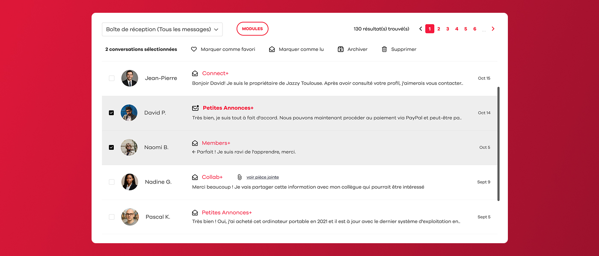
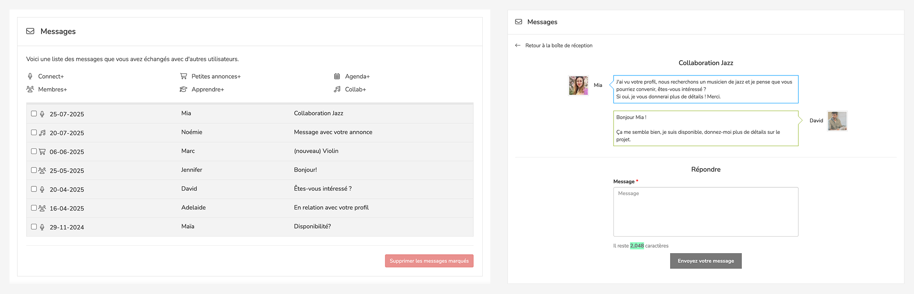

SACEM — Messaging App Redesign
Redesigned the legacy messaging system to improve user experience and increase engagement while introducing modern messaging functionalities.
French Client Manager
x2 Front End Developers
What I Did
Led the full design process from ideation to implementation, strategy and execution while aligning cross-functional teams towards the same goal.
Conducted user research, user flows and competitive analysis to map pain points in the existing messaging flow.
Restructured the message hierarchy to reduce cognitive load and quickly set the most relevant content first.
Built interactive Figma low-fi prototypes and ran two rounds of usability testing with non-users and team members iterating on findings between each session.
Designed a modern, accessible messaging interface aligned with SACEM's design system, introducing new functionalities such as rich-text replies, attachments and improved message organization tools.
Context & Role
SACEM is the French society responsible for collecting and managing the royalties for music creators and publishers. We have been their product partner since 2020,
providing them with a dedicated platform with perks ranging from music industry discounts and event agendas to member profiles, networking, second-hand equipment marketplace...
Ahead of a major event that required using the platform messaging system, the client sat with us to share their requests which led to us redesigning the whole messaging system to
a much more modern one. As the lead and only designer for this project, I took part in the very first calls with our client manager and SACEM's team to understand their needs before any brief existed. All client
communication ran though our account manager, which meant translating business needs carefully and sharing them with the IT team quite early to define the whole project.
Problems & Goals
Problems
The project came with a tight deadline: a full messaging redesign had to ship before a major client event, roughly two months from kick-off. This forced early and difficult scope decisions, with several features cut before a single wireframe was drawn.
The platform itself added a difficult task. SACEM ran on a CakePHP version that was nearly a decade old, which put several modern messaging such as real-time updates, inline media previews, threaded replies, impossible to accomplish. We had to find alternative approaches that delivered equivalent user value that our technology could actually support.
Scheduling was also a problem we encountered. The project ran through August to October, overlapping with summer holidays on both the team and client side. Feedback sessions were hard to coordinate, and at times we had to move forward on key decisions without direct client validation therefore relying on our research in order to advance.
Usage data from the existing system set the current status of the messaging very clear: the average conversation contained just 2.8 messages. Users weren't continuing threads for two main reasons, they were quite limited with what they could do or share within the legacy system, and perhaps because they had quietly switched to more convenient channels like email, whatsapp or other messaging tools.
Goals
With those key pain points mapped, the objectives were clear. The redesign needed to make conversations more likely to continue by enhancing the legacy system to a more up-to-date one.
That meant introducing message organisation tools: such as being able to mark messages as read or unread, archive threads, and/or flag important ones as favourites, so users could manage their inbox as one would expect. We also prioritised having a modern reply experience: formatted text and attachment support and reworked the visual hierarchy so unread and high-priority messages were immediately scannable in a quick look.
Every design decision was filtered through two lenses: does it work within the existing technology, and can it ship within the expected timeline.

Screenshots of the old messaging system
Research & Insights
Competitive Benchmarking
Before defining the feature, I spent time auditing existing messaging systems, in both user apps and enterprise tools to stress-test our requirements list. The goal was to confirm that every feature we were proposing was something realistic, and that we weren't accidentally inventing something that would feel unfamiliar or require users to re-learn basic behaviours.
The new system needed to feel immediately recognisable, close to what people already used in their daily lives so that the learning curve was would be zero for most.
Target Users
- The occasional user — Logs in occasionally, particularly not tech-savvy, but has a profile and receives messages from time to time. This user must never feel lost or forced to adapt to something new. The redesign had to respect existing mental models and avoiding new problems for someone who isn't there often enough to build new habits.
- The active user — Logs in daily, has an inbox that accumulates quickly, and would genuinely benefit from organisational tools. Features like marking messages as unread, archive messages, or having a favourites to set important conversations are aimed directly at this profile, hence giving them control over a busy inbox without overwhelming the interface for other target users.
- The event user — The primary target for this redesign. This user receives a high volume of messages in a short period, all of them related to a same topic, therefore needs the inbox to stay clean and manageable under pressure. For this only profile we introduced a new message navigation: the ability to move directly from one message to the next without returning to the inbox each time. Average users won't rely on this feature since their conversations tend to cover different topics and rarely arrive in bulk, but for someone handling hundreds of similar messages in a single day, it removes the most repetitive action in the flow.
Design Process
Conducted interviews and surveys to understand user needs and pain points.
Created low-fidelity designs and got buy-in from stakeholders.
Developed high-fidelity prototypes for user testing and validation.
Tested with real users to validate design decisions and gather feedback.
Refined the design based on testing results and stakeholder input.
Collaborated with developers to ensure accurate implementation.
Final Outcome
Present the final solution and explain how it addresses the initial challenge. What was delivered and how does it work? What are the key features of the final product?

Feature 1 — New message threading view

Feature 2 — Notification centre redesign
Results & Impact
Increased user engagement by X% or achieved specific metric
Reduced task completion time or improved efficiency
Improved user satisfaction scores or positive feedback
Key Takeaways
Getting buy-in from both product and engineering at the research stage — before any wireframes were drawn — saved significant revision cycles later. Early alignment meant design decisions were grounded in real constraints, not assumptions.
Short feedback loops — testing low-fidelity flows with real users before committing to high-fidelity screens — helped catch usability issues that no internal review would have surfaced. Speed of iteration matters more than polish at the discovery stage.